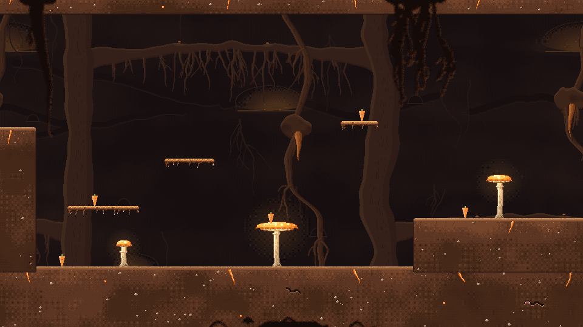
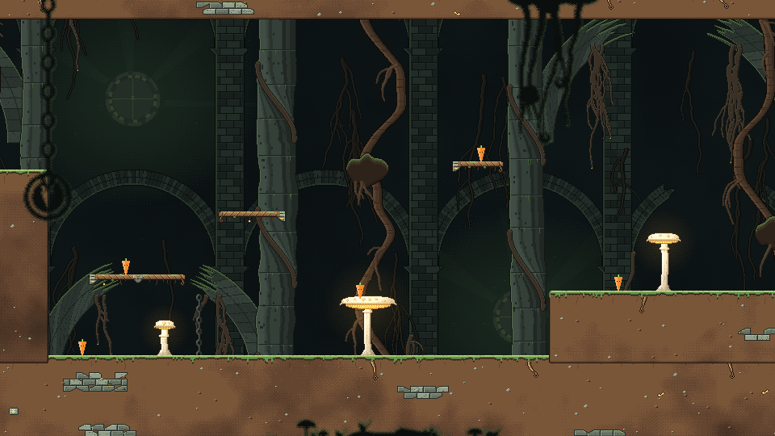
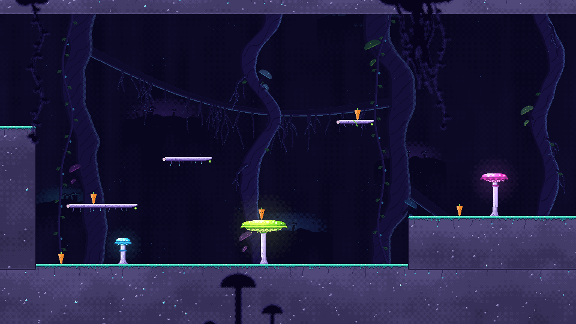
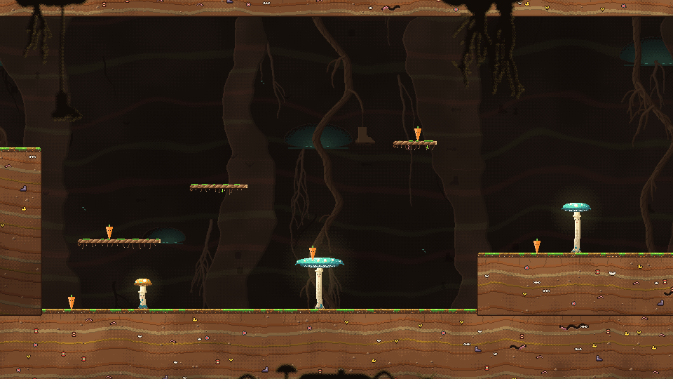
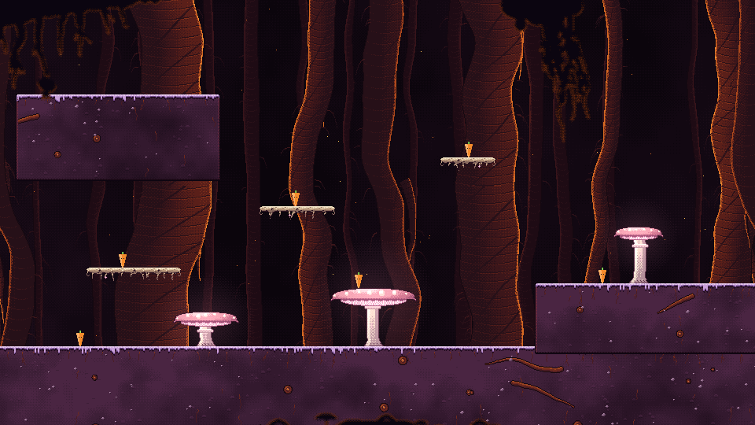

Biomes
Below the garden the game goes underground, through a dungeon of five rooms that each have their own
look, or biome. A biome is a painter: a script that draws ground blocks, jump-through ledges,
mushroom caps and stems in its own style. Every painter answers the same set of requests, so the
three level parts that build a level, Solid (ground), Plank (ledges) and Shroom (mushroom
platforms), can take on any biome. Pick it in the Inspector with the part's look (or the Shroom's
biome); the collision never changes, only the art. See Level Parts.
Each biome also has baked backdrop layers and blurred foreground pieces that a level places behind and in front of the playfield.
In dungeon order:
- Warm Burrow: a cosy rabbit warren just under the garden.
- Overgrown Vault: the entrance hall of an ancient vegetable kingdom's vault.
- Glowshroom Grotto: a deep cavern lit by glowing toadstools.
- Compost Depths: the rotten vegetables' lair inside a compost heap.
- Taproot Heart: the final boss chamber, in a giant carrot's roots.

Warm BurrowA cosy rabbit warren of warm brown soil just under the garden, with carrot taproots poking through and amber glow-caps for light.
Overgrown VaultThe entrance hall of an ancient vegetable kingdom's vault, mossy stone and roots in green darkness, lit by a sealed gold-glowing door.
Glowshroom GrottoA deep indigo cavern lit almost only by living things, with candy-coloured cyan, magenta and lime toadstools glowing out of the dark.
Compost DepthsThe rotten vegetables' lair, a comical compost-heap underworld of earthy strata, buried junk and mouldy glowing toadstools.
Taproot HeartThe final boss chamber deep in the roots of a colossal carrot, giant amber taproots rising to a glowing heart above plum-dark soil.